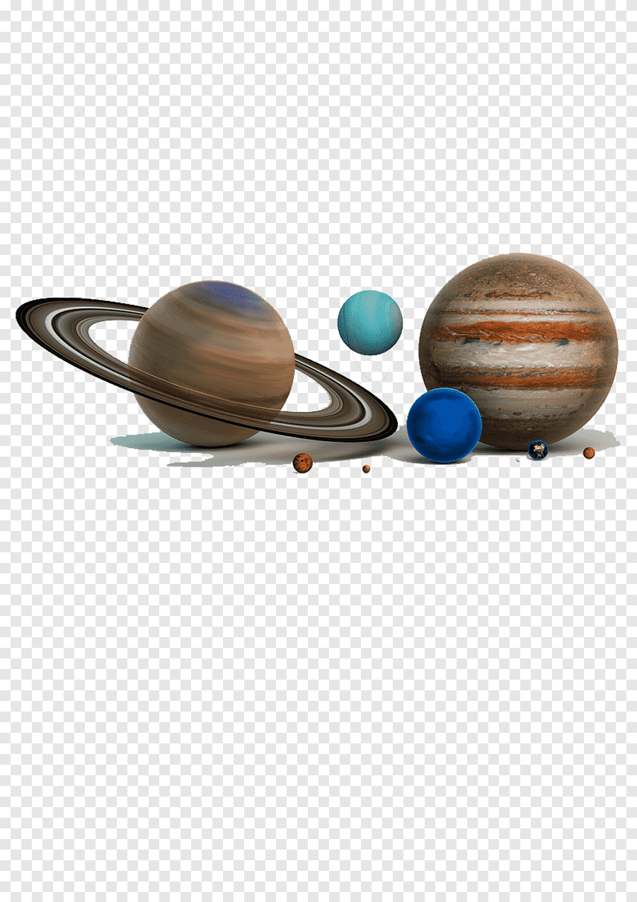
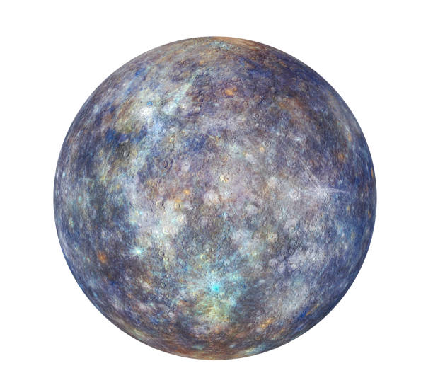
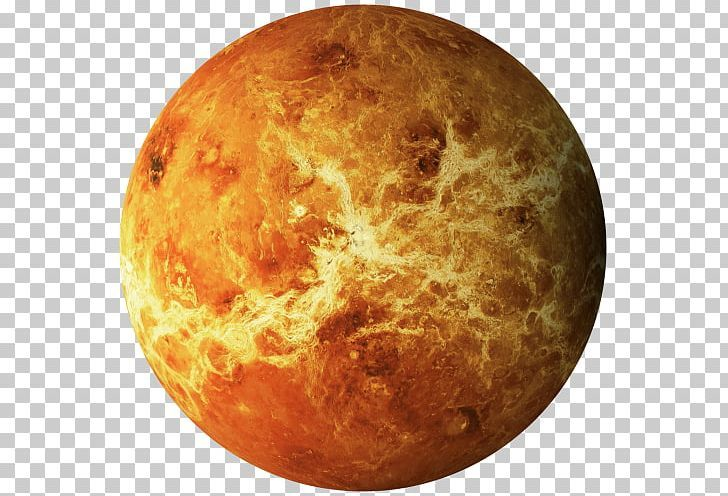
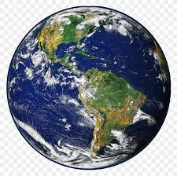

Solar system

MERCURY

Mercury is the smallest planet in our solar system.Its little bigger than earth's moon.It is the closest planet to the sun.MERCURY IS ONE OF THE ROCKY PLANETS.
IS MERCURY HOT OR COLD?
Mercury's surface temperature r both extremely hot or cold.Bcz the planet is so close to the sun.TEMPERATURE CAN DIP AS LOW AS -290F(-180C)
VENUS

Venus is the second planet from the sun & earth's closest planetary neighbor."Venus is the hottest planet in oyur solar system".
WHAT DOES VENUS MEAN IN PLANET?
Venus,the third brightest object after the sun & moon,was named after the Roman goddess of love & beauty.
EARTH

EARTH is the third PLANET from the sun & the fifth largest planet in the solar system in terms of size & mass.
WHERE IS EARTH IN THE MILKY WAY GALAXY?
Earth is located in the orion Arm,one of the for spiral arms of the MILKY WAY,which lies about two-thirds of the way from the centre of the Galaxy.
MARS

Mars is the 4th planet from the sun.Mars is also a dynamic planet with seasons,polar ice caps & more active in the past.
top